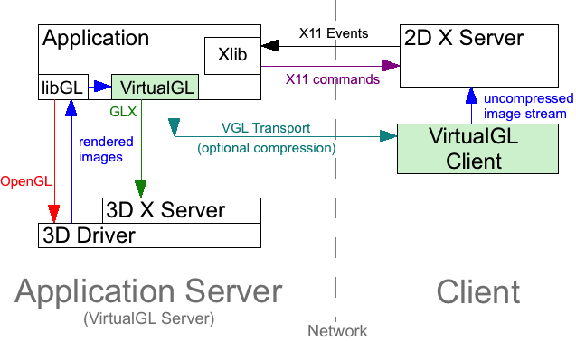
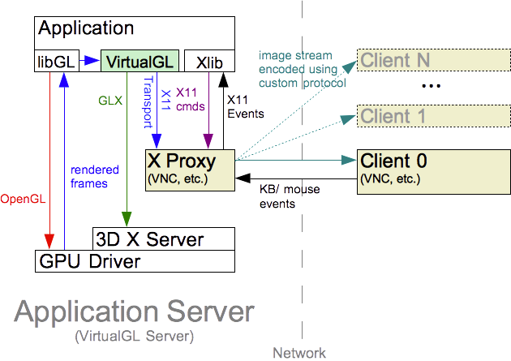
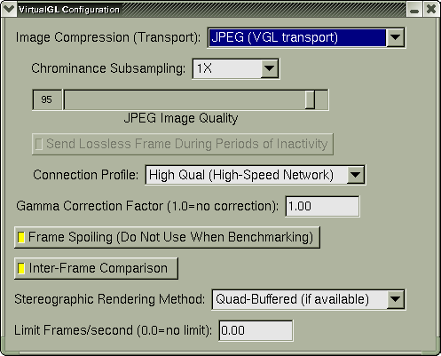
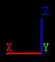
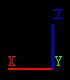

User’s Guide for VirtualGL 2.4
Intended audience: System Administrators, Graphics Programmers, Researchers, and others with knowledge of Linux or Unix operating systems, OpenGL and GLX, and X windows.
This document and all associated illustrations are licensed under the Creative Commons Attribution 2.5 License. Any works that contain material derived from this document must cite The VirtualGL Project as the source of the material and list the current URL for the VirtualGL web site.
The official VirtualGL binaries contain libjpeg-turbo, which is based in part on the work of the Independent JPEG Group.
The VirtualGL server components include software developed by the FLTK Project and distributed under the terms of the FLTK License.
VirtualGL is licensed under the wxWindows Library License, v3.1, a derivative of the GNU Lesser General Public License (LGPL), v2.1.
This document assumes that VirtualGL will be installed in the default
directory (/opt/VirtualGL). If your installation of
VirtualGL resides in a different directory, then adjust the instructions
accordingly.
VirtualGL is an open source toolkit that gives any Unix or Linux remote display software the ability to run OpenGL applications with full 3D hardware acceleration. Some remote display solutions cannot be used with OpenGL applications at all. Others force OpenGL applications to use a slow, software-only renderer, to the detriment of performance as well as compatibility. The traditional method of displaying OpenGL applications to a remote X server (indirect rendering) supports 3D hardware acceleration, but this approach causes all of the OpenGL commands and 3D data to be sent over the network to be rendered on the client machine. This is not a tenable proposition unless the data is relatively small and static, unless the network is very fast, and unless the OpenGL application is specifically tuned for a remote X-Windows environment.
With VirtualGL, the OpenGL commands and 3D data are instead redirected to a 3D graphics accelerator (AKA “graphics processing unit” or “GPU”) in the application server, and only the rendered 3D images are sent to the client machine. VirtualGL thus “virtualizes” 3D graphics hardware, allowing it to be co-located in the “cold room” with compute and storage resources. VirtualGL also allows GPUs to be shared among multiple users, and it provides “workstation-like” levels of performance on even the most modest of networks. This makes it possible for large, noisy, hot 3D workstations to be replaced with laptops or even thinner clients. More importantly, however, VirtualGL eliminates the workstation and the network as barriers to data size. Users can now visualize huge amounts of data in real time without needing to copy any of the data over the network or sit in front of the machine that is rendering the data.
Normally, a Unix OpenGL application would send all of its drawing commands and data, both 2D and 3D, to an X-Windows server, which may be located across the network from the application server. VirtualGL, however, employs a technique called “split rendering” to force the 3D commands and data from the application to go to a GPU in the application server. VGL accomplishes this by pre-loading a dynamic shared object (DSO) into the OpenGL application at run time. This DSO intercepts a handful of GLX, OpenGL, and X11 commands necessary to perform split rendering. When the application attempts to use an X window for OpenGL rendering, VirtualGL intercepts the request, creates a corresponding 3D pixel buffer (“Pbuffer”) in video memory on the application server, and uses the Pbuffer for OpenGL rendering instead. When the application swaps the OpenGL drawing buffers or flushes the OpenGL command buffer to indicate that it has finished rendering a frame, VirtualGL reads back the pixels from the Pbuffer and sends them to the client.
The beauty of this approach is its non-intrusiveness. VirtualGL monitors a few X11 commands and events to determine when windows have been resized, etc., but it does not interfere in any way with the delivery of 2D X11 commands to the X server. For the most part, VGL does not interfere with the delivery of OpenGL commands to the GPU, either (there are some exceptions, such as the implementation of color index rendering.) VGL merely forces the OpenGL commands to be delivered to a GPU that is attached to a different X server (the “3D X server”) than the X server to which the 2D drawing commands are delivered (the “2D X server.”) Once the OpenGL rendering has been redirected to a Pbuffer, everything (including esoteric OpenGL extensions, fragment/vertex programs, etc.) should “just work.” If an application runs locally on a 3D server/workstation, then that same application should run remotely from that same machine using VirtualGL.
VirtualGL has two built-in “image transports” that can be used to send rendered 3D images to the client machine:
Figure 3.1: The VGL Transport with a Remote 2D X Server
XPutImage() and similar
X-Windows commands. This is most useful in conjunction with an “X
proxy”, which can be one of any number of Unix remote display
applications, such as VNC. These X proxies are essentially
“virtual” X servers. They appear to the application as a
normal X server, but they perform X11 rendering to a virtual framebuffer
in main memory rather than to a real framebuffer (video memory.) This
allows the X proxy to send only images to the client machine rather than
fine-grained X-Windows rendering commands. When using the X11
Transport, VirtualGL does not perform any image compression or encoding
itself. It instead relies upon an X proxy to encode and deliver the
images to the client(s). Since the use of an X proxy eliminates the
need to send X-Windows commands over the network, this is the best means
of using VirtualGL over high-latency or low-bandwidth networks.
Figure 3.2: The X11 Transport with an X Proxy
VirtualGL also provides an API that can be used to develop custom image transport plugins.
| Server (x86) | Server (x86-64) | Client | |
|---|---|---|---|
| Recommended CPU |
|
Dual processors or dual cores recommended | For optimal performance, the CPU should support SSE2 extensions. |
| Graphics | AMD or nVidia GPU
|
Any graphics adapter with decent 2D performance
|
|
| O/S | VirtualGL should work with a variety of Linux distributions, FreeBSD, and Solaris, but currently-supported versions of Red Hat Enterprise Linux (and its work-alikes, including CentOS, Oracle Linux, and Scientific Linux), Ubuntu LTS, and SuSE Linux Enterprise tend to receive the most attention from the VirtualGL community. | ||
| Other Software | X server configured to export True Color (24-bit or 32-bit) visuals | ||
| Client | |
|---|---|
| Recommended CPU | Any Intel-based Mac |
| O/S | OS X 10.5 (“Leopard”) or later |
| Other Software |
|
| Client | |
|---|---|
| Recommended CPU | For optimal performance, the CPU should support SSE2 extensions. |
| Graphics | Any graphics adapter with decent 2D performance |
| Other Software |
|
The client requirements do not apply to anaglyphic stereo. See Chapter 16 for more details.
| Server | Client | |
|---|---|---|
| Linux/Unix |
|
|
| Mac/x86 | N/A | GPU that supports stereo (example: nVidia Quadro) |
| Windows | N/A | This version of VirtualGL does not support remote quad-buffered stereo with Windows clients. |
| Client | |
|---|---|
| Linux/Unix | GPU that supports transparent overlays. The 2D X server should be configured to export overlay visuals. |
| Mac/x86 | |
| Windows | This version of VirtualGL does not support transparent overlays with Windows clients. |
VirtualGL must be installed on any machine that will act as a VirtualGL server or as a client for the VGL Transport. It is not necessary to install VirtualGL on the client machine if using VNC or another type of X proxy.
If you want to run both 32-bit and 64-bit OpenGL applications using VirtualGL on 64-bit Linux systems, then you will need to install both the i386 and x86_64 VirtualGL RPMs or both the “virtualgl” and “virtualgl32” amd64 DEBs. (The virtualgl32 DEB is a supplementary package that contains only the 32-bit server components.)
rpm -e VirtualGL rpm -i VirtualGL*.rpm
You may need to add --all-matches to the rpm -e command line if you have installed both the 32-bit and 64-bit VirtualGL RPMs.
dpkg -i virtualgl*.deb
VirtualGL-{version}.dmg)
from the
Files
area of the
VirtualGL
SourceForge project page.
VirtualGL-{version}.pkg
inside the disk image. Follow the instructions to install the Mac
client.
Refer to http://www.virtualgl.org/Documentation/Cygwin.
If you are using a platform for which there is not a pre-built VirtualGL
binary package available, then download the VirtualGL source tarball
(VirtualGL-{version}.tar.gz)
from the
Files
area of the
VirtualGL
SourceForge project page, uncompress
it, cd VirtualGL-{version}, and
read the contents of BUILDING.txt for further instructions
on how to build and install VirtualGL from source.
As root, issue one of the following commands:
rpm -e VirtualGL
You may need to add --all-matches to the RPM command line if you have installed both the 32-bit and 64-bit VirtualGL RPMs.
dpkg -r virtualglIf you have also installed the 32-bit supplementary package:
dpkg -r virtualgl32
Use the “Uninstall VirtualGL” application provided in the VirtualGL disk image, or issue the following command from the Terminal:
sudo /opt/VirtualGL/bin/uninstall
Refer to http://www.virtualgl.org/Documentation/Cygwin.
VirtualGL requires access to a GPU in the application server so that it can create off-screen pixel buffers (Pbuffers) and redirect the 3D rendering from X windows into these Pbuffers. Unfortunately, accessing a GPU on Linux and Unix systems requires going through an X server. On such systems, the only way to share the application server’s GPU(s) among multiple users is to grant those users access to the 3D X server (the X server attached to the GPU(s). Refer to the figures in Chapter 3.)
It is important to understand the security risks associated with this.
Once a user has access to the 3D X server, there is nothing that would
prevent the user from logging keystrokes or reading back images from
that X server. Using xauth, one can obtain
“untrusted” X authentication keys that prevent such
exploits, but unfortunately, those untrusted keys also disallow access
to the 3D hardware. Thus, it is necessary to grant full, trusted access
to the 3D X server for any users that will need to run VirtualGL.
Unless you fully trust the users to whom you are granting this access,
then you should avoid logging in locally to the 3D X server
(particularly as root) unless absolutely necessary.
This section will explain how to configure a VirtualGL server such that selected users can run VirtualGL, even if the server is sitting at the login prompt.
/etc/init.d/gdm stop
service lightdm stop
/etc/init.d/xdm stop
init 3
svcadm disable gdm2-login
svcadm disable gdm
/etc/init.d/dtlogin stop
/usr/local/etc/rc.d/gdm stop
/usr/local/kde4/etc/rc.d/kdm4 stop
/opt/VirtualGL/bin/vglserver_config
Configure server for use with VirtualGL in GLX mode.)
Restrict 3D X server access to vglusers group (recommended)? [Y/n]
vglusers group can use VirtualGL (the
configuration script will create the vglusers group if it
doesn’t already exist.) This is the most secure option, since it
prevents any users outside of the vglusers group from
accessing (and thus exploiting) the 3D X server.
Restrict framebuffer device access to vglusers group (recommended)? [Y/n]
vglusers group can run OpenGL
applications on the VirtualGL server (the configuration script will
create the vglusers group if it doesn’t already
exist.) This limits the possibility that an unauthorized user could
snoop the 3D framebuffer device(s) and thus see (or alter) the output of
a 3D application that is being used with VirtualGL.
vglusers group to log in locally to this server and run
OpenGL applications, then this option must be selected.
Disable XTEST extension (recommended)? [Y/n]
Certain Linux distributions do not have the X server command-line entries in their GDM configuration files. On these distributions, it will be necessary to run gdmsetup and manually add an argument of -tst to the X server command line to disable XTEST for the first time. After this, vglserver_config should be able to disable and enable XTEST properly. This is known to be necessary for openSUSE 10 and Red Hat Enterprise Linux 5.
x11vnc and x0vncserver both require XTEST, so
if you need to attach a VNC server to the 3D X server, then it is
necessary to answer “No” (and thus leave XTEST enabled.)
vglusers group, then edit /etc/group and add
root to the vglusers group. If you choose,
you can also add additional users to the group at this time. Note that
any user you add to vglusers must log out and back in again
before their new group permissions will take effect.
/etc/init.d/gdm start
service lightdm start
/etc/init.d/xdm start
init 5
svcadm enable gdm2-login
svcadm enable gdm
/etc/init.d/dtlogin start
/usr/local/etc/rc.d/gdm start
/usr/local/kde4/etc/rc.d/kdm4 start
To verify that the application server is ready to run VirtualGL, log out of the server, log back into the server using SSH, and execute the following commands in the SSH session:
vglusersxauth merge /etc/opt/VirtualGL/vgl_xauth_key xdpyinfo -display :0 /opt/VirtualGL/bin/glxinfo -display :0 -c
NOTE: xauth and xdpyinfo are in /usr/openwin/bin on Solaris systems.
xdpyinfo -display :0 /opt/VirtualGL/bin/glxinfo -display :0 -c
Both commands should output a list of visuals and should complete with
no errors. If you chose to disable the XTEST extension, then check the
output of xdpyinfo to verify that XTEST does
not show up in the list of extensions.
You should also examine the output of glxinfo to ensure
that at least one of the visuals is 24-bit or 32-bit TrueColor and has
Pbuffer support (the latter is indicated by a “P” in the
last column.) Example:
visual x bf lv rg d st colorbuffer ax dp st accumbuffer ms cav drw id dep cl sp sz l ci b ro r g b a F bf th cl r g b a ns b eat typ ------------------------------------------------------------------------------ 0x151 24 tc 0 32 0 r y . 8 8 8 0 . 4 24 8 16 16 16 16 0 0 None PXW
If none of the visuals has Pbuffer support, then this is most likely because there is no 3D acceleration, which is most likely because the correct 3D drivers are not installed (or are misconfigured.) Lack of 3D acceleration is also typically indicated by the word “Mesa” in the client GLX vendor string and/or the OpenGL vendor string, and the words “Software Rasterizer” in the OpenGL renderer string.
VirtualGL can redirect the OpenGL commands from a 3D application to any
GPU in the server machine. In order for this to work, however, all of
the GPUs must be attached to different screens on the same X server or
to different X servers. Attaching them to different screens is the
easiest and most common approach, and this allows the GPUs to be
individually addressed by setting VGL_DISPLAY to (or
invoking vglrun -d with) :0.0,
:0.1, :0.2, etc. If the GPUs are attached to
different X servers, then they can be individually addressed by setting
VGL_DISPLAY to (or invoking vglrun -d
with) :0.0, :1.0, :2.0, etc.
The application server’s SSH daemon should have the
X11Forwarding option enabled and the UseLogin
option disabled. This is configured in sshd_config, which
is usually located under /etc/ssh.
You can use the vglserver_config script to restore the
security settings that were in place before VirtualGL was installed.
Option 2
(Unconfigure server for use with VirtualGL in GLX mode)
will remove any shared access to the 3D X server and thus prevent
VirtualGL from accessing the 3D hardware in that manner. Additionally,
this option will re-enable the XTEST extension on the 3D X server and
will restore the framebuffer device permissions to their default (by
default, only root or the user that is currently logged into the
application server locally can access the framebuffer devices.)
NOTE: Unconfiguring the server does not remove the vglusers group.
After selecting Option 2, you must restart the display manager before the changes will take effect.
VirtualGL has the ability to take advantage of the MIT-SHM extension in Cygwin/X to accelerate image drawing on Windows. This can significantly improve the overall performance of the VirtualGL pipeline when running over a local-area network.
To enable MIT-SHM in Cygwin/X:
cygserver-config
net start cygserver
server to the CYGWIN system environment
variable (create this environment variable if it doesn’t already
exist)
xdpyinfo and verify that MIT-SHM appears
in the list of X extensions
This mode is recommended for use only on secure local-area networks. The X11 traffic is encrypted, but the VGL Transport is left unencrypted to maximize performance.
/opt/VirtualGL/bin/vglconnect {user}@{server}
Replace {user} with your username on the VirtualGL
server and {server} with the hostname or IP
address of that server.
/opt/VirtualGL/bin/vglrun [vglrun options] {application_executable_or_script} {arguments}
Consult Chapter 19 for
more information on vglrun command-line options.
As with the previous mode, this mode performs optimally on local-area networks. However, it is less secure, since both the X11 traffic and the VGL Transport are unencrypted. This mode is primarily useful in grid environments, in which you may not know ahead of time which server will execute a VirtualGL job. It is assumed that the “submit host” (the machine into which you connect with SSH) and the “execute hosts” (the machines that will run VirtualGL jobs) share the same home directories and reside in the same domain.
Most newer Linux and Unix distributions ship with default settings that do not allow TCP connections into the X server. Such systems cannot be used as clients with this procedure unless they are reconfigured to allow X11 TCP connections.
The procedure for this mode is identical to the procedure for the
VGL Transport with X11
forwarding, except that you should pass a
-x argument to vglconnect when connecting to
the server:
/opt/VirtualGL/bin/vglconnect -x {user}@{server}
Both the VGL Transport and the X11 traffic are tunneled through SSH when using this mode, and thus it provides a completely secure solution. It is also useful when either the VirtualGL server or the client machine are behind restrictive firewalls and only SSH connections are allowed through. Using SSH tunneling on wide-area networks should not affect performance significantly. However, using SSH tunneling on a local-area network can reduce the end-to-end performance of the VGL Transport by anywhere from 20-40%.
The procedure for this mode is identical to the procedure for the
VGL Transport with X11
forwarding, except that you should pass a
-s argument to vglconnect when connecting to
the server:
/opt/VirtualGL/bin/vglconnect -s {user}@{server}
vglconnect will make two SSH connections into the server,
the first to find an open port on the server and the second to create
the SSH tunnel for the VGL Transport and open the secure shell. If you
are not using an SSH agent to create password-less logins, then this
mode will require you to enter your password twice.
vglconnect -s can be used to create multi-layered SSH
tunnels. For instance, if the VirtualGL server is not directly
accessible from the Internet, then you can run
vglconnect -s on the client machine to connect to an
SSH gateway server, then you can run vglconnect -s
again on the gateway server to connect to the VirtualGL server
(application server.) Both the X11 traffic and the VGL Transport will
be forwarded from the VirtualGL server through the gateway and to the
client.

When using the VGL Transport over Gigabit Ethernet or faster networks,
it may be desirable to disable image compression. This can be
accomplished by passing an argument of -c rgb to
vglrun or setting the VGL_COMPRESS environment
variable to rgb on the VirtualGL server. Disabling image
compression will reduce VirtualGL’s server and client CPU usage by
50% or more, but the tradeoff is that it will also increase
VirtualGL’s network usage by a factor of 10 or more. Thus,
disabling image compression is not recommended unless you are using
switched Gigabit Ethernet (or faster) infrastructure and have plenty of
bandwidth to spare.
XDMCP is very insecure and is not recommended as a means of running VirtualGL, in general. This section is provided mainly for completeness and should not be construed as an endorsement of XDMCP. In general, using an X proxy is a much better approach for accessing a remote desktop session on the 3D application server.
Using the VGL Transport with XDMCP is conceptually similar to using the
VGL Transport with a direct X11
connection. The major difference is that,
rather than remotely displaying individual X windows to the 2D X server,
XDMCP remotely displays a complete desktop session from the application
server. X11 applications are launched inside of this remote desktop
session rather than in a separate shell, so vglconnect
cannot be used in this case. Instead, it is necessary to start
vglclient manually on the client machine.
xhost +LOCAL:
This grants access to the 2D X server for any user that is currently logged into the client machine. This is not very secure, but neither is using XDMCP. If you are concerned, then see below for a discussion of how to use xauth to provide 2D X server access in a slightly more secure manner.
DISPLAY environment variable to the display name of the X
server that is running the XDMCP session (usually :0 or
:1), and type:
vglclient -detachYou can now close the terminal/command prompt, if you wish.
vglclient
is a bit trickier. In this case, you can’t open up a separate
terminal window on the client machine for the purposes of running
vglclient. However, from inside of the XDMCP session, you
can open an SSH session back into the client machine. In this SSH
session, set the DISPLAY environment variable to the
display name of the X server that is running the XDMCP session (usually
:0 or :1), and type:
vglclient -detachYou can now close the SSH session, if you wish.
Typing xhost +LOCAL: in step 3 above opens the 2D X
server to all current users of the client machine. This shouldn’t
pose any significant risk if the client is a Windows or a Mac machine.
However, Linux/Unix clients might have multiple simultaneous users, so
in these cases, it may be desirable to use a more secure method of
granting access to the 2D X server.
Instead of typing xhost +LOCAL:, you can type the
following:
xauth nextract - $DISPLAY | sed "s/.*[ ]//g" | xargs ssh {client} xauth add {display} .
where {client} is the hostname or IP address of
the client machine and {display} is the display
name of the 2D X server, from the point of view of the client machine
(usually :0 or :1).
This extracts the XAuth key for the 2D X server, then remotely adds it to the XAuth keyring on the client machine.
The VirtualGL Client application (vglclient) receives
encoded and/or compressed images on a dedicated TCP socket, decodes
and/or decompresses the images, and draws the images into the
appropriate X window. The vglconnect script wraps both
vglclient and SSH to greatly simplify the process of
creating VGL Transport connections.
vglconnect invokes vglclient with an argument
of -detach, which causes vglclient to
completely detach from the console and run as a background daemon. It
will remain running silently in the background, accepting VGL Transport
connections for the X server on which it was started, until that X
server is reset or until the vglclient process is
explicitly killed. Logging out of the X server will reset the X server
and thus kill all vglclient instances that are attached to
it. You can also explicitly kill all instances of
vglclient running under your user account by invoking
vglclient -kill
(vglclient is installed in /opt/VirtualGL/bin
by default.)
vglconnect instructs vglclient to redirect all
of its console output to a log file named
{home}/.vgl/vglconnect-{hostname}-{display}.log,
where {home} is the path of the current
user’s home directory, {hostname} is the
name of the computer running vglconnect, and
{display} is the name of the current X display
(read from the DISPLAY environment or passed to
vglconnect using the -display argument.) In
the event that something goes wrong, this log file is the first place to
check.
When vglclient successfully starts on a given X display, it
stores its listener port number in a root window property on the X
display. If other vglclient instances attempt to start on
the same X display, they read the X window property, determine that
another vglclient instance is already running, and exit to
allow the first instance to retain control. vglclient will
clean up the X property under most circumstances, even if it is
explicitly killed. However, under rare circumstances (if sent a SIGKILL
signal on Unix, for instance), a vglclient instance may
exit uncleanly and leave the X property set. In these cases, it may be
necessary to add an argument of -force to
vglconnect the next time you use it. This tells
vglconnect to start a new vglclient instance,
regardless of whether vglclient thinks that there is
already an instance running on this X display. Alternately, you can
simply reset your X server to clear the orphaned X window property.
To retain compatibility with previous versions of VirtualGL, the first
vglclient instance on a given machine will attempt to
listen on port 4242 for unencrypted connections and 4243 for SSL
connections (if VirtualGL was built with OpenSSL support.) If it fails
to obtain one of those ports, because another application or another
vglclient instance is already using them, then
vglclient will try to obtain a free port in the range of
4200-4299. Failing that, it will request a free port from the operating
system.
In a nutshell: if you only ever plan to run one X server at a time on
your client machine, which means that you’ll only ever need one
instance of vglclient at a time, then it is sufficient to
open inbound port 4242 (and 4243 if you plan to use SSL) in your client
machine’s firewall. If you plan to run multiple X servers on your
client machine, which means that you will need to run multiple
vglclient instances, then you may wish to open ports
4200-4299. Similarly, if you are running vglclient on a
multi-user X proxy server that has a firewall, then you may wish to open
ports 4200-4299 in the server’s firewall. Opening ports 4200-4299
will accommodate up to 100 separate vglclient instances (50
if OpenSSL support is enabled.) More instances than that cannot be
accommodated on a firewalled machine, unless the firewall is able to
create rules based on application executables instead of listening ports.
Note that it is not necessary to open any inbound ports in the firewall to use the VGL Transport with SSH Tunneling.
The VGL Transport is a good solution for using VirtualGL over a fast network. However, the VGL Transport is not generally suitable for high-latency or low-bandwidth networks, due to its reliance on the X11 protocol to send the non-3D elements of the 3D application’s GUI. The VGL Transport also requires an X server to be running on the client machine, which makes it generally more difficult to deploy and use on Windows clients. VirtualGL can be used with an “X proxy” to overcome these limitations. An X proxy acts as a virtual X server, receiving X11 commands from the application (and from VirtualGL), rendering the X11 commands into images, compressing the resulting images, and sending the compressed images over the network to a client or clients. X proxies perform well on all types of networks, including high-latency and low-bandwidth networks. They often provide rudimentary collaboration capabilities, allowing multiple clients to simultaneously view the same X session and pass around control of the keyboard and mouse. X proxies are also stateless, meaning that the client can disconnect and reconnect at will from any machine on the network, and the 3D application will remain running on the server.
Since VirtualGL is sending rendered 3D images to the X proxy at a very fast rate, the proxy must be able to compress the images very quickly in order to keep up. Unfortunately, however, most X proxies can’t. They simply aren’t designed to compress, with any degree of performance, the large and complex images generated by 3D applications. Therefore, the VirtualGL Project provides an optimized X proxy called “TurboVNC”, a variant of TightVNC that is designed specifically to achieve high levels of performance with 3D applications running in VirtualGL. More information about TurboVNC, including instructions for using it with VirtualGL, can be found in the TurboVNC User’s Guide.
Many other X proxy solutions work well with VirtualGL, and some of these solutions provide compelling features (seamless windows, for instance, or session management), but none of these X proxies matches the performance of TurboVNC, as of this writing.
The most common (and optimal) way to use VirtualGL with an X proxy is to set up both on the same server. This allows VirtualGL to send its rendered 3D images to the X proxy through shared memory rather than sending them over a network.
With this configuration, you can usually invoke
/opt/VirtualGL/bin/vglrun {application_executable_or_script}
from a terminal inside of the X proxy session, and it will “just
work.” VirtualGL reads the value of the DISPLAY
environment variable to determine whether to enable the X11 Transport by
default. If DISPLAY begins with a colon
(“:”) or with “unix:”,
then VirtualGL will assume that the X connection is local and will
enable the X11 Transport as the default. In some cases, however, the
DISPLAY environment variable in the X proxy session may not
begin with a colon or “unix:”. In these cases,
it is necessary to manually enable the X11 Transport by setting the
VGL_COMPRESS environment variable to proxy or
by passing an argument of -c proxy to
vglrun.
If the X proxy and VirtualGL are running on different servers, then it is desirable to use the VGL Transport to send images from the VirtualGL server to the X proxy. It is also desirable to disable image compression in the VGL Transport. Otherwise, the images would have to be compressed by the VirtualGL server, decompressed by the VirtualGL Client, then recompressed by the X proxy, which is a waste of CPU resources. However, sending images uncompressed over a network requires a fast network (generally, Gigabit Ethernet or faster), so there needs to be a fast link between the VirtualGL server and the X proxy server for this procedure to perform well.
The procedure for using the VGL Transport to display 3D applications from a VirtualGL server to a remote X proxy is the same as the procedure for using the VGL Transport to display 3D applications from a VirtualGL server to a remote 2D X server, with the following exceptions:
VGL_COMPRESS environment
variable to rgb or passing an argument of
-c rgb to vglrun when launching
VirtualGL. Otherwise, VirtualGL will detect that the connection to the X
server is remote, and it will automatically try to enable JPEG
compression.
The X Video extension allows applications to pre-encode or pre-compress images and send them through the X server to the graphics adapter, which presumably has on-board video decoding capabilities. This approach greatly reduces the amount of CPU resources used by the X server, which can be beneficial if the X server is running on a different machine than the application.
In the case of VirtualGL, what this means is that the VirtualGL client machine no longer has to decode or decompress images from the 3D application server. It can simply pass the images along to the graphics adapter for decoding.
VirtualGL supports the X Video extension in two ways:
Setting the VGL_COMPRESS environment variable to
yuv or passing an argument of -c yuv to
vglrun enables the VGL Transport with YUV encoding. When
this mode is enabled, VirtualGL encodes images as YUV420P (a form of YUV
encoding that uses 4X chrominance subsampling and separates Y, U, and V
pixel components into separate image planes) instead of RGB or JPEG.
The YUV420P images are sent to the VirtualGL Client, which draws them
using the X Video extension.
On a per-frame basis, YUV encoding uses about half the server CPU time as JPEG compression and only slightly more server CPU time than RGB encoding. On a per-frame basis, YUV encoding uses about 1/3 the client CPU time as JPEG compression and about half the client CPU time as RGB encoding. YUV encoding also uses about half the network bandwidth (per frame) as RGB.
However, since YUV encoding uses 4X chrominance subsampling, the resulting images may contain some visible artifacts. In particular, narrow, aliased lines and other sharp features may appear “soft”.
Setting the VGL_COMPRESS environment variable to
xv or passing an argument of -c xv to
vglrun enables the XV Transport. The XV Transport is a
special version of the X11 Transport that encodes images as YUV420P and
draws them directly to the 2D X server using the X Video extension.
This is mainly useful in conjunction with X proxies that support the X
Video extension. The idea is that, if the X proxy is going to have to
transcode the image to YUV anyhow, VirtualGL may be faster at doing
this, since it has a SIMD-accelerated YUV encoder.
VirtualGL 2.2 (and later) includes an API that allows you to write your own image transports. Thus, you can use VirtualGL for doing split rendering and pixel readback but then use your own library for delivering the pixels to the client.
When the VGL_TRANSPORT environment variable (or the
-trans option to vglrun) is set to
{t}, then VirtualGL will look for a DSO (dynamic
shared object) with the name
libtransvgl_{t}.so in
the dynamic linker path and will attempt to access a set of API
functions from this library. The functions that the plugin library must
export are defined in /opt/VirtualGL/include/rrtransport.h,
and an example of their usage can be found in
server/testplugin.cpp and
server/testplugin2.cpp in the VirtualGL source
distribution. The former wraps the VGL Transport as an image transport
plugin, and the latter does the same for the X11 Transport.
vglrun can be used to launch either binary executables or
shell scripts, but there are a few things to keep in mind when using
vglrun to launch a shell script. When you launch a shell
script with vglrun, the VirtualGL faker library will be
preloaded into every executable that the script launches. Normally this
is innocuous, but if the script calls any executables that have the
setuid and/or setgid permission bits set, then the dynamic linker will
refuse to preload the VirtualGL faker library into those executables.
One of the following warnings will be printed for each setuid/setgid
executable that the script tries to launch:
ERROR: ld.so: object 'librrfaker.so' from LD_PRELOAD cannot be preloaded: ignored.
ERROR: ld.so: object 'libdlfaker.so' from LD_PRELOAD cannot be preloaded: ignored.
ld.so.1: warning: librrfaker.so: open failed: No such file in secure directories
ld.so.1: warning: libdlfaker.so: open failed: No such file in secure directories
These are just warnings, and the setuid/setgid executables will continue
to run (without VirtualGL preloaded into them.) However, if you want to
get rid of the warnings, an easy way to do so is to simply edit the
application script and make it store the value of the
LD_PRELOAD environment variable until right before the
application executable is launched. For instance, consider the
following application script:
Initial contents of application.sh:
#!/bin/sh some_setuid_executable some_3D_application_executable
You could modify the script as follows:
#!/bin/sh LD_PRELOAD_SAVE=$LD_PRELOAD LD_PRELOAD= export LD_PRELOAD some_setuid_executable LD_PRELOAD=$LD_PRELOAD_SAVE export LD_PRELOAD some_3D_application_executable
This procedure may be necessary to work around certain other interaction issues between VirtualGL and the launch scripts of specific applications. See Application Recipes for more details.
If the 3D application that you are intending to run in VirtualGL is itself a setuid/setgid executable, then further steps are required. Otherwise, the 3D application will launch without VirtualGL preloaded into it. Forcing VirtualGL to be preloaded into setuid/setgid executables has security ramifications, so please be aware of these before you do it. By applying one of the following workarounds, you are essentially telling the operating system that you trust the security and stability of VirtualGL as much as you trust the security and stability of the operating system. While we’re flattered, we’re not sure that we’re necessarily deserving of that accolade, so if you are in a security-critical environment, apply the appropriate level of paranoia here.
To force VirtualGL to be preloaded into
setuid/setgid executables on Linux, you have to first make sure that the
faker libraries (librrfaker.so and
libdlfaker.so) are installed in the “system”
library path (usually /usr/lib, /usr/lib64,
/usr/lib32, or /usr/lib/i386-linux-gnu). Next,
make librrfaker.so and libdlfaker.so setuid
executables. To do this, run the following commands as root:
chmod u+s /usr/{lib}/librrfaker.so
chmod u+s /usr/{lib}/libdlfaker.so
where {lib} is lib,
lib64, lib32, or
lib/i386-linux-gnu, depending on your system.
On Solaris, you can force VirtualGL to be preloaded into setuid/setgid
executables by adding the VirtualGL library directories to the Solaris
“secure path.” Solaris keeps a tight lid on what goes into
/usr/lib and /lib, and by default, it will
only allow libraries in those paths to be preloaded into an executable
that is setuid and/or setgid. Generally, 3rd party packages are
forbidden from installing anything into /usr/lib or
/lib, but you can use the crle utility to add
other directories to the operating system’s list of secure paths.
In the case of VirtualGL, you would execute one of the following
commands (as root):
crle -u -s /opt/VirtualGL/lib32
crle -64 -u -s /opt/VirtualGL/lib64
VirtualBox is an enterprise-class, open source virtualization solution provided by Oracle. Since version 2.1.0, VirtualBox has provided support for hardware-accelerated OpenGL in Windows and Linux guests running on Windows, Mac/Intel, Linux, and Solaris/x86 hosts. 3D acceleration in VirtualBox is accomplished by installing a special driver in the guest that uses a subset of Chromium to transmit OpenGL calls through a local connection to the VirtualBox process running on the host. When used in conjunction with VirtualGL on a Linux or Solaris/x86 host, this solution provides a means of displaying Windows 3D applications remotely.
To use VirtualGL with VirtualBox, perform the following procedures:
librrfaker.so and libdlfaker.so setuid
executables (Linux) or to add the VirtualGL library directory to the
list of secure paths (Solaris).
vglrun VirtualBox -startvm {VM name or UUID}
This should work on most systems. It is known to work with VirtualBox 4.1.8 and prior and with VirtualBox 4.2 and later on Linux.
With VirtualBox 4.1.10 and later 4.1.x versions, it is necessary to rename /usr/lib/virtualbox/VBoxTestOGL and execute ln -fs /bin/true /usr/lib/virtualbox/VBoxTestOGL in order to use those versions of VirtualBox with VirtualGL.
+pr to vglrun above) or set the
VGL_LOGO environment variable to 1 in order to
verify that VirtualGL is loaded and working.
vglrun VirtualBox and using
the GUI to launch the VM does not work. VirtualBox forks a separate
process for each VM, and the value of the LD_PRELOAD
environment variable from vglrun does not get propagated to
the VM process unless you start it directly.
vglconnect -x)
are used. Using a high-performance X proxy (such as TurboVNC) is
generally preferred when remotely displaying VirtualBox using VirtualGL,
particularly on 100 Megabit and slower networks.
VirtualGL can also be used with VMWare Workstation, and the concept is basically the same as that of VirtualBox. As with VirtualBox, VMWare uses a special driver in the guest O/S to intercept the OpenGL commands and marshal them to the host O/S, where VirtualGL picks them up.
To use VirtualGL with VMWare Workstation, perform the following procedures:
librrfaker.so and libdlfaker.so setuid
executables.
This has been tested with VMWare Workstation 9.
vglrun vmware -X {VM path}/{VM name}.vmx
The notes from the previous chapter apply to VMWare Workstation as well.
| Application | Platform | Recipe | Notes |
|---|---|---|---|
| Abaqus v6 | Linux | It is necessary to add import osos.environ['ABAQUS_EMULATE_OVERLAYS'] = "1" to /{abaqus_install_dir}/{abaqus_version}/site/abaqus_v6.env to make Abaqus v6 work properly with VirtualGL if the 2D X server does not support transparent overlays. If this is not done, then the application may fail to launch, fail to display the 3D pixels, or the 3D pixels may become corrupted whenever other windows obscure them. |
VirtualGL does not redirect the rendering of transparent overlays, since those cannot be rendered in a Pbuffer. Thus, in order to use transparent overlays, the 2D X server must be able to render them, which is rarely the case for X proxies (see Section 16.2 for more details.) Setting ABAQUS_EMULATE_OVERLAYS to 1 causes the application to emulate overlay rendering instead of using actual transparent overlays. This workaround is known to be necessary when running Abaqus 6.9 and 6.10 in VNC. |
| Abaqus v6 | Linux | vglrun -nodl {abaqus_path}/abaqus |
User reports indicate that Abaqus 6.9 will not work properly if libdlfaker.so from VirtualGL is preloaded into it. This may be true for other versions of Abaqus as well. |
| Abaqus v6 | Linux | Set the VGL_DEFAULTFBCONFIG environment variable to GLX_STENCIL_SIZE,8 prior to launching the application with vglrun |
Abaqus 6.10 requires a visual with a stencil buffer, but it does not call glXChooseVisual() to specify its desire for such a visual. Thus, VirtualGL has no idea of the application’s preference, and it is necessary to use VGL_DEFAULTFBCONFIG to give VirtualGL a hint as to what the application wants. Otherwise, VirtualGL will create a Pbuffer without a stencil buffer, and this will cause incorrect rendering when using certain functions within Abaqus (such as View Cut.) See Section 19.1 for further information. |
| Cadence Allegro v16.5 | Linux | vglrun +sync allegro |
Allegro relies on mixed X11/OpenGL rendering, and thus certain features (specifically the pcb_cursor_infinite cursor style) do not work properly unless VGL_SYNC is enabled. If VGL_SYNC is not enabled, then the crosshairs may remain on the screen. Since VGL_SYNC automatically enables the X11 transport and disables frame spoiling, it is highly recommended that you use an X proxy when VGL_SYNC is enabled. See Section 19.1 for further information. |
| Animator 4 | Linux | Comment out the line that reads unsetenv LD_PRELOAD in the a4 script, then launch Animator 4 using vglrun -ge a4 |
When the a4 script unsets LD_PRELOAD, this prevents VirtualGL from being loaded into the application. Animator 4 additionally checks the value of LD_PRELOAD and attempts to unset it from inside the application. Using vglrun -ge to launch the application fools Animator 4 into thinking that LD_PRELOAD is unset. |
| ANSA v12.1.0 | Linux | Add LD_PRELOAD_SAVE=$LD_PRELOADexport LD_PRELOAD= to the top of the ansa.sh script, then add export LD_PRELOAD=$LD_PRELOAD_SAVE just prior to the ${ANSA_EXEC_DIR}bin/ansa_linux${ext2} line. |
The ANSA startup script directly invokes /lib/libc.so.6 to query the glibc version. Since the VirtualGL faker depends on libc, preloading VirtualGL when directly invoking libc.so.6 creates an infinite loop. Thus, it is necessary to disable the preloading of VirtualGL in the application script and then re-enable it prior to launching the actual application. |
| ANSYS HFSS, ANSYS ICEM CFD, Roxar RMS | Linux | Set the VGL_SPOILLAST environment variable to 0 prior to launching the application with vglrun |
These applications draw node highlighting and/or rubber banding directly to the front buffer. In order for these front buffer operations to be displayed properly, it is necessary to use the “spoil first” frame spoiling algorithm whenever the application calls glFlush(). See Section 19.1 for further information. |
| AutoForm v4.0x | All | vglrun +sync xaf_{version} |
AutoForm relies on mixed X11/OpenGL rendering, and thus certain features (particularly the “Dynamic Section” dialog and “Export Image” feature) do not work properly unless VGL_SYNC is enabled. Since VGL_SYNC automatically enables the X11 transport and disables frame spoiling, it is highly recommended that you use an X proxy when VGL_SYNC is enabled. See Section 19.1 for further information. |
| Cedega v6.0.x | Linux | Add export LD_PRELOAD=librrfaker.so to the top of ~/.cedega/.winex_ver/winex-{version}/bin/winex3, then run Cedega as you would normally (without vglrun.) Since vglrun is not being used, it is necessary to use environment variables or the VirtualGL Configuration dialog to modify VirtualGL’s configuration. |
The actual binary (WineX) that uses OpenGL is buried beneath several layers of Python and shell scripts. The LD_PRELOAD variable does not get propagated down from the initial shell that invoked vglrun. |
| Google Chrome/Chromium v31 and later | Linux | vglrun google-chrome --disable-gpu-sandboxor vglrun chromium --disable-gpu-sandbox |
By default, Chrome/Chromium uses a separate process to perform 3D rendering (WebGL), and for reasons that are not yet fully understood, this breaks VirtualGL. The --disable-gpu-sandbox option causes 3D rendering to be performed within the browser process. |
| Compiz | Linux | Set the VGL_WM environment variable to 1 prior to launching the window manager with vglrun, or pass an argument of +wm to vglrun. |
See Section 19.1 for further information. |
| Heretic II | Linux | vglrun heretic2 +set vid_ref glx |
|
| MAGMA5 | Linux | Set the VGL_DEFAULTFBCONFIG environment variable to GLX_STENCIL_SIZE,8 prior to launching the application with vglrun |
MAGMA5 requires a visual with a stencil buffer, but it does not call glXChooseVisual() to specify its desire for such a visual. Thus, VirtualGL has no idea of the application’s preference, and it is necessary to use VGL_DEFAULTFBCONFIG to give VirtualGL a hint as to what the application wants. Otherwise, VirtualGL will create a Pbuffer without a stencil buffer, and this will cause incorrect rendering when using certain functions within MAGMA5. See Section 19.1 for further information. |
| Mathematica 7 | Linux | Set the VGL_ALLOWINDIRECT environment variable to 1 prior to launching the application with vglrun |
Mathematica 7 will not draw the axis numbers on 3D charts correctly unless it is allowed to create an indirect OpenGL context. See Section 19.1 for further information. |
| Qt 5 Applications | Linux | Build and install VirtualGL from source, adding -DVGL_FAKEXCB=1 to the CMake command line. Set the VGL_FAKEXCB environment variable to 1 prior to launching the application with vglrun, or pass an argument of +xcb to vglrun. |
Although Qt 5 uses GLX to interface between X11 and OpenGL, it uses XCB instead of Xlib to perform all other X11-related functions. Thus, VirtualGL has to interpose enough of the XCB API to allow it to intercept window resize events and to make Qt 5 believe that a GLX extension is present, even when the 2D X server doesn’t support GLX. Because XCB is only available on newer platforms, this feature is not built into the “official” VirtualGL binary packages. |
| Tecplot 360 2011 and earlier | Linux | Set the VGL_GLFLUSHTRIGGER environment variable to 0 prior to launching the application with vglrun |
When running in TurboVNC (using VirtualGL), flashing artifacts will be produced when the user zooms/pans/rotates the scene in Tecplot 360, unless VirtualGL is instructed not to use glFlush() as an end-of-frame trigger. This has been fixed in Tecplot 2012 and later. See Section 19.1 for further information. |
Stereographic rendering is a feature of OpenGL that creates separate rendering buffers for the left and right eyes and allows the application to render a different image into each buffer. How the stereo images are subsequently displayed depends on the particulars of the 3D hardware and the user’s environment. VirtualGL can support stereographic applications in one of two ways: (1) by sending the stereo image pairs to the client to be displayed in stereo by the client’s GPU, or (2) by combining each stereo image pair into a single image that can be viewed with traditional anaglyphic 3D glasses or a passive stereo system, such as a 3D TV.
The name “quad-buffered” stereo refers to the fact that OpenGL uses four buffers (left front, right front, left back, and right back) to support stereographic rendering with double buffering. GPUs with quad-buffered stereo capabilities generally provide some sort of synchronization signal that can be used to control various types of active stereo 3D glasses. Some also support “passive stereo”, which requires displaying the left and right eye buffers to different monitor outputs. VirtualGL supports quad-buffered stereo by rendering the stereo images on the server and sending the image pairs across the network to be displayed on the client.
In most cases, VirtualGL does not require that a GPU be present in the client machine. However, a GPU is required to display stereo image pairs, so one must be present in any client machine that will use VirtualGL’s quad-buffered stereo feature. Since the GPU is only being used to draw images, it need not necessarily be a high-end GPU. Generally, the least expensive GPU that has stereo capabilities will work fine in a VirtualGL client machine. The VirtualGL server must also have a GPU that supports stereo, since this is the only way that VirtualGL can obtain a stereo Pbuffer.
When an application tries to render something in stereo, VirtualGL will default to using quad-buffered stereo rendering if the 2D X server supports OpenGL and has stereo visuals available (not currently supported in Cygwin/X.) Otherwise, VirtualGL will fall back to using anaglyphic stereo (see below.) It is usually necessary to explicitly enable stereo in the graphics driver configuration for both the client and server machines. The Troubleshooting section below lists a way to verify that both the 3D X server and the 2D X server have stereo visuals available.
In quad-buffered mode, VirtualGL reads back both the left and right eye
buffers on the server and sends the contents as a pair of compressed
images to the VirtualGL Client. The VirtualGL Client then decompresses
both images and draws them as a single stereo frame to the client
machine’s X display using glDrawPixels(). It should
thus be no surprise that enabling quad-buffered stereo in VirtualGL
decreases performance by 50% or more and uses twice the network
bandwidth to maintain the same frame rate as mono.
Quad-buffered stereo requires the VGL Transport. Attempting to enable it with any other image transport will cause VGL to fall back to anaglyphic stereo mode.
Anaglyphic stereo is the type of stereographic display used by old 3D movies. It typically relies on a set of 3D glasses consisting of red transparency film over the left eye and cyan transparency film over the right eye, although green/magenta and blue/yellow schemes can be used as well. To generate a 3D anaglyph, one color channel from the left eye buffer is combined with the other two color channels from the right eye buffer, thus allowing a single monographic image to contain stereo data. For instance, in the case of red/cyan, the red channel is taken from the left eye buffer, and the green and blue channels are taken from the right eye buffer. From the point of view of VirtualGL, an anaglyphic image is the same as a monographic image, so anaglyphic stereo images can be sent using any image transport to any type of client, regardless of the client’s capabilities.
VirtualGL uses anaglyphic stereo if it detects that an application has rendered something in stereo but quad-buffered stereo is not available, either because the client doesn’t support it or because a transport other than the VGL Transport is being used. Anaglyphic stereo provides a cheap and easy way to view stereographic applications in X proxies and on clients that do not support quad-buffered stereo. Additionally, anaglyphic stereo performs much faster than quad-buffered stereo, since it does not require sending twice the data to the client.
As with quad-buffered stereo, anaglyphic stereo requires that the VirtualGL server have stereo rendering capabilities. However, anaglyphic stereo does not require any 3D rendering capabilities (stereo or otherwise) on the client machine.
As with anaglyphic stereo, passive stereo combines a stereographic image pair into a single image (a “stereogram”), and thus it can be used with any image transport. However, unlike anaglyphic stereo, passive stereo must be used with specific display hardware, such as a 3D TV or monitor, that decodes the left and right eye images from the stereogram and sends them separately to a pair of 3D glasses (typically, this is accomplished by way of polarization.)
VirtualGL supports three methods of encoding stereograms:
Most 3D TVs/monitors can be configured to decode at least one of these types of stereograms. In order for this to work, however, the 3D drawing area must be full-screen.
A particular stereo mode can be selected by setting the
VGL_STEREO environment variable or by using the
-st argument to vglrun. See Section
19.1 for more details.
In the case of transparent overlays, VirtualGL completely bypasses its
own GLX faker and uses indirect OpenGL rendering to draw to the
transparent overlay using the 2D X server. The underlay is still
rendered on the 3D X server, read back, and sent to the 2D X server, as
always. Using indirect rendering to render the overlay is unfortunately
necessary, because there is no reliable way to draw to an overlay using
2D (X11) functions, there are severe performance issues (on some cards)
with using glDrawPixels() to draw to the overlay, and there
is no reasonable way to composite the overlay and underlay in a Pbuffer
on the VirtualGL server.
The use of overlays is becoming more and more infrequent, and when they are used, it is generally only for drawing small, simple, static shapes and text. We have found that it is often faster to ship the overlay geometry over to the 2D X server rather than to render it as an image and send the image. Thus, even if it were possible to implement overlays without using indirect rendering, it is likely that indirect rendering of overlays would still be the fastest approach for most applications.
As with quad-buffered stereo, overlays must be explicitly enabled in the graphics driver and X server configurations. In the case of overlays, however, they need only be supported and enabled on the client machine and in the 2D X server. Some graphics drivers are known to disallow using both quad-buffered stereo and overlays at the same time. Transparent overlays are not currently supported in Cygwin/X.
Indexed color (8-bit) overlays have been tested and are known to work
with VirtualGL. True color (24-bit) overlays work, in theory, but have
not been tested. Use glxinfo (see
Troubleshooting
below) to verify whether your client’s X display supports overlays
and whether they are enabled.
In a PseudoColor visual, each pixel is represented by an index that refers to a location in a color table. The color table stores the actual color values (256 of them in the case of 8-bit PseudoColor) that correspond to each index. An application merely tells the X server which color index to use when drawing, and the X server takes care of mapping that index to an actual color from the color table. OpenGL allows for rendering to PseudoColor visuals, and it does so by being intentionally ignorant of the relationship between indices and actual colors. As far as OpenGL is concerned, each color index value is just a meaningless number, and it is only when the final image is drawn by the X server that these numbers take on meaning. As a result, many pieces of OpenGL’s core functionality either have undefined behavior or do not work at all with PseudoColor rendering. PseudoColor rendering used to be a common technique for visualizing scientific data, because such data often only contained 8 bits per sample to begin with. Applications could manipulate the color table to allow the user to dynamically control the relationship between sample values and colors. However, since most modern graphics cards have dropped support for PseudoColor rendering (it was removed as a feature in OpenGL 3.1), the applications that use it have become a vanishing breed.
VirtualGL supports PseudoColor rendering if a PseudoColor visual is
available on the 2D X server or X proxy. A PseudoColor visual need not
be present on the 3D X server. On the 3D X server, VirtualGL uses the
red channel of a standard RGB Pbuffer to store the color index. Upon
receiving an end-of-frame trigger, VirtualGL reads back the red channel
of the Pbuffer and uses XPutImage() to draw the color
indices into the appropriate X window. To put this another way,
PseudoColor rendering in VirtualGL always uses the X11 Transport.
However, since there is only 1 byte per pixel in a PseudoColor
“image”, reasonable performance can still be obtained when
displaying to a remote X server on the same local-area network.
VirtualGL’s PseudoColor rendering mode works with X proxies, provided that the X proxy provides a PseudoColor visual. Note, however, that some X proxies, such as VNC, cannot provide both PseudoColor and TrueColor visuals at the same time.
VirtualGL includes a modified version of glxinfo that can
be used to determine whether or not the 2D and 3D X servers have stereo,
overlay, or PseudoColor visuals enabled.
Run the following command sequence on the VirtualGL server to determine whether the 3D X server has a suitable visual for stereographic rendering:
xauth merge /etc/opt/VirtualGL/vgl_xauth_key
/opt/VirtualGL/bin/glxinfo -display :{n} -c -v
(where {n} is the display number of the 3D X server.) One
or more of the visuals should say “stereo=1” and should list
“Pbuffer” as one of the “Drawable Types.”
Run the following command sequence on the VirtualGL server to determine whether the 2D X server has a suitable visual for stereographic rendering, transparent overlays, or PseudoColor.
/opt/VirtualGL/bin/glxinfo -v
In order to use stereo, one or more of the visuals should say “stereo=1”. In order to use transparent overlays, one or more of the visuals should say “level=1”, should list a “Transparent Index” (non-transparent visuals will say “Opaque” instead), and should have a class of “PseudoColor.” In order to use PseudoColor (color index) rendering, one of the visuals should have a class of “PseudoColor.”
The easiest way to uncover bottlenecks in VirtualGL’s image
pipeline is to set the VGL_PROFILE environment variable to
1 on both server and client (passing an argument of
+pr to vglrun on the server has the same
effect.) This will cause VirtualGL to measure and report the throughput
of various stages in the pipeline. For example, here are some
measurements from a dual Pentium 4 server communicating with a Pentium
III client on a 100 Megabit LAN:
Readback - 43.27 Mpixels/sec - 34.60 fps Compress 0 - 33.56 Mpixels/sec - 26.84 fps Total - 8.02 Mpixels/sec - 6.41 fps - 10.19 Mbits/sec (18.9:1)
Decompress - 10.35 Mpixels/sec - 8.28 fps Blit - 35.75 Mpixels/sec - 28.59 fps Total - 8.00 Mpixels/sec - 6.40 fps - 10.18 Mbits/sec (18.9:1)
The total throughput of the pipeline is 8.0 Megapixels/sec, or 6.4 frames/sec, indicating that our frame is 8.0 / 6.4 = 1.25 Megapixels in size (a little less than 1280 x 1024 pixels.) The readback and compress stages, which occur in parallel on the server, are obviously not slowing things down, and we’re only using 1/10 of our available network bandwidth. Looking at the client, however, we discover that its slow decompression speed (10.35 Megapixels/second) is the primary bottleneck. Decompression and blitting on the client cannot be done in parallel, so the aggregate performance is the harmonic mean of the decompression and blitting rates: [1/ (1/10.35 + 1/35.75)] = 8.0 Mpixels/sec. In this case, we could improve the performance of the whole system by simply using a client with a faster CPU.
This example is meant to demonstrate how the client can sometimes be the primary impediment to VirtualGL’s end-to-end performance. Using “modern” hardware on both ends of the connection, VirtualGL can easily stream 50+ Megapixels/sec across a LAN, as of this writing.
By default, VirtualGL will only send a frame to the client if the client is ready to receive it. If VirtualGL detects that the application has finished rendering a new frame but there are already frames waiting in the queue to be processed, then those unprocessed frames are dropped (“spoiled”) and the new frame is promoted to the head of the queue. This prevents a backlog of frames on the server, which would cause a perceptible delay in the responsiveness of interactive applications. However, when running non-interactive applications, particularly benchmarks, frame spoiling should always be disabled. With frame spoiling disabled, the server will render frames only as quickly as VirtualGL can send those frames to the client, which will conserve server resources as well as allow OpenGL benchmarks to accurately measure the end-to-end performance of VirtualGL (assuming that the VGL Transport is used.) With frame spoiling enabled, OpenGL benchmarks will report meaningless data, since the rate at which the server can render frames is decoupled from the rate at which VirtualGL can send those frames to the client.
In most X proxies (including VNC), there is effectively another layer of frame spoiling, since the rate at which the X proxy can send frames to the client is decoupled from the rate at which VirtualGL can draw images into the X proxy. Thus, even if frame spoiling is disabled in VirtualGL, OpenGL benchmarks will still report inaccurate data if they are run in such X proxies. TCBench, described below, provides a limited solution to this problem.
To disable frame spoiling, set the VGL_SPOIL environment
variable to 0 on the VirtualGL server or pass an argument
of -sp to vglrun. See Section
19.1 for further information.
VirtualGL includes several tools that can be useful in diagnosing performance problems with the system.
NetTest is a network benchmark that uses the same network I/O classes as
VirtualGL. It can be used to test the latency and throughput of any
TCP/IP connection, with or without SSL encryption. nettest
is installed in /opt/VirtualGL/bin by default. For Windows
users, a native Windows version of NetTest is included in the
“VirtualGL-Utils” package, which is distributed alongside
VirtualGL.
To use NetTest, first start up the NetTest server on one end of the connection:
nettest -server [-ssl]
(Use -ssl if you want to test the performance of SSL
encryption over this particular connection. VirtualGL must have been
compiled with OpenSSL support for this option to be available.)
Next, start the client on the other end of the connection:
nettest -client {server} [-ssl]
Replace {server} with the hostname or IP address
of the machine on which the NetTest server is running. (Use
-ssl if the NetTest server is running in SSL mode.
VirtualGL must have been compiled with OpenSSL support for this option
to be available.)
The NetTest client will produce output similar to the following:
TCP transfer performance between localhost and {server}:
Transfer size 1/2 Round-Trip Throughput Throughput
(bytes) (msec) (MBytes/sec) (Mbits/sec)
1 0.093402 0.010210 0.085651
2 0.087308 0.021846 0.183259
4 0.087504 0.043594 0.365697
8 0.088105 0.086595 0.726409
16 0.090090 0.169373 1.420804
32 0.093893 0.325026 2.726514
64 0.102289 0.596693 5.005424
128 0.118493 1.030190 8.641863
256 0.146603 1.665318 13.969704
512 0.205092 2.380790 19.971514
1024 0.325896 2.996542 25.136815
2048 0.476611 4.097946 34.376065
4096 0.639502 6.108265 51.239840
8192 1.033596 7.558565 63.405839
16384 1.706110 9.158259 76.825049
32768 3.089896 10.113608 84.839091
65536 5.909509 10.576174 88.719379
131072 11.453894 10.913319 91.547558
262144 22.616389 11.053931 92.727094
524288 44.882406 11.140223 93.450962
1048576 89.440702 11.180592 93.789603
2097152 178.536997 11.202160 93.970529
4194304 356.754396 11.212195 94.054712
We can see that the throughput peaks at about 94 megabits/sec, which is pretty good for a 100 Megabit connection. We can also see that, for small transfer sizes, the round-trip time is dominated by latency. The “latency” is the same thing as the one-way (1/2 round-trip) transit time for a zero-byte packet, which is about 93 microseconds in this case.
CPUstat is available only for Linux and is installed in the same place
as NetTest (/opt/VirtualGL/bin by default.) It measures
the average, minimum, and peak CPU usage for all processors combined and
for each processor individually. On Windows, this same functionality is
provided in the Windows Performance Monitor, which is part of the
operating system. On Solaris, the same data can be obtained through
vmstat.
CPUstat measures the CPU usage over a given sample period (a few seconds) and continuously reports how much the CPU was utilized since the last sample period. Output for a particular sample looks something like this:
ALL : 51.0 (Usr= 47.5 Nice= 0.0 Sys= 3.5) / Min= 47.4 Max= 52.8 Avg= 50.8 cpu0: 20.5 (Usr= 19.5 Nice= 0.0 Sys= 1.0) / Min= 19.4 Max= 88.6 Avg= 45.7 cpu1: 81.5 (Usr= 75.5 Nice= 0.0 Sys= 6.0) / Min= 16.6 Max= 83.5 Avg= 56.3
The first column indicates what percentage of time the CPU was active since the last sample period (this is then broken down into what percentage of time the CPU spent running user, nice, and system/kernel code.) “ALL” indicates the average utilization across all CPUs since the last sample period. “Min”, “Max”, and “Avg” indicate a running minimum, maximum, and average of all samples since CPUstat was started.
Generally, if an application’s CPU usage is fairly steady, you can run CPUstat for a bit and wait for the Max. and Avg. for the “ALL” category to stabilize, then that will tell you what the application’s peak and average % CPU utilization is.
TCBench was born out of the need to compare VirtualGL’s performance to that of other thin client software, some of which had frame spoiling features that could not be disabled. TCBench measures the frame rate of a thin client system as seen from the client’s point of view. It does this by attaching to one of the client windows and continuously reading back a small area at the center of the window. While this may seem to be a somewhat non-rigorous test, experiments have shown that, if care is taken to ensure that the application is updating the center of the window on every frame (such as in a spin animation), TCBench can produce quite accurate results. It has been sanity checked with VirtualGL’s internal profiling mechanism and with a variety of system-specific techniques, such as monitoring redraw events on the client’s windowing system.
TCBench is installed in /opt/VirtualGL/bin by default. For
Windows users, a native Windows version of TCBench is included in the
“VirtualGL-Utils” package, which is distributed alongside
VirtualGL. Run tcbench from the command line, and it will
prompt you to click in the window you want to benchmark. That window
should already have an automated animation of some sort running before
you launch TCBench. Note that GLXSpheres (see below) is an ideal
benchmark to use with TCBench, since GLXSpheres draws a new sphere to
the center of its window on every frame.
tcbench -?
lists the relevant command-line arguments, which can be used to adjust the benchmark time, the sampling rate, and the x and y offset of the sampling area within the window.
GLXSpheres is a benchmark that produces very similar images to nVidia’s (long-discontinued) SphereMark benchmark. Back in the early days of VirtualGL’s existence, it was discovered (quite by accident) that SphereMark was a pretty good test of VirtualGL’s end-to-end performance, because that benchmark generated images with about the same proportion of solid color and similar frequency components to the images generated by volume visualization applications.
Thus, the goal of GLXSpheres was to create an open source Unix version of SphereMark (the original SphereMark was for Windows only) completely from scratch. GLXSpheres does not use any code from the original benchmark, but it does attempt to mimic the visual output of the original as closely as possible. GLXSpheres lacks some of the advanced rendering features of the original, such as the ability to use vertex arrays, but since GLXspheres was primarily designed as a benchmark for VirtualGL, display lists are more than fast enough for that purpose.
GLXSpheres has some additional modes that its predecessor lacked, modes that are designed specifically to test the performance of various VirtualGL features:
glxspheres -s)glxspheres -c)glxspheres -o)glxspheres -m)glxspheres -m over a remote X connection, then run
vglrun -sp glxspheres -m over the same
connection and compare. Immediate mode does not use display lists, so
when immediate mode OpenGL is rendered indirectly (over a remote X
connection), this causes every OpenGL command to be sent as a separate
network request to the X server … with every frame. Many
applications do not use display lists (because the geometry they are
rendering is dynamic, or for other reasons), so this test models how
such applications might perform when displayed remotely without
VirtualGL.
glxspheres -i)vglrun glxspheres -i) with the non-interactive
frame rate (vglrun -sp glxspheres) allows you to
quantify the effect of X latency on the performance of interactive
applications in a VirtualGL environment.
GLXSpheres is installed in /opt/VirtualGL/bin by default.
64-bit VirtualGL builds name this program glxspheres64 so
as to allow both a 64-bit and a 32-bit version of GLXSpheres to be
installed on the same system.
Several of VirtualGL’s configuration parameters can be changed on
the fly once a 3D application has been started. This is accomplished by
using the VirtualGL Configuration dialog, which can be popped up by
holding down the CTRL and SHIFT keys and
pressing the F9 key while any one of the 3D
application’s windows is active. This displays the following
dialog box:

You can use this dialog to adjust various image compression and display parameters in VirtualGL. Changes are communicated immediately to VirtualGL.
VGL_COMPRESS=proxy. This option can be activated at any
time, regardless of which transport was active when VirtualGL started.
VGL_COMPRESS=jpeg. This option is only available if the
VGL Transport was active when VirtualGL started. VGL_COMPRESS=rgb. This option is only available if the VGL
Transport was active when VirtualGL started. VGL_COMPRESS=xv.
This option is only available if the 2D X server has the X Video
extension and the X Video implementation supports the YUV420P (AKA
“I420”) pixel format. VGL_COMPRESS=yuv.
This option is only available if the 2D X server has the X Video
extension, the X Video implementation supports the YUV420P (AKA
“I420”) pixel format, and the VGL Transport was active when
VirtualGL started. VGL_COMPRESS configuration option.
If an image transport plugin is loaded, then this menu’s name changes to “Image Compression”, and it has options “0” through “10”.
VGL_SUBSAMP=gray
VGL_SUBSAMP=1x VGL_SUBSAMP=2x VGL_SUBSAMP=4x VGL_SUBSAMP configuration option.
If an image transport plugin is loaded, then this menu has two additional options, “8X” and “16X”.
VGL_QUAL. See Section
19.1 for more information about the
VGL_QUAL configuration option.
If an image transport plugin is loaded, then this gadget’s name changes to “Image Quality”.
VGL_GAMMA. This enables VirtualGL’s internal gamma
correction system with the specified gamma correction factor. See
Section 19.1 for more information
about the VGL_GAMMA configuration option.
VGL_SPOIL.
See Section 17.2 and Section
19.1 for more information about the
VGL_SPOIL configuration option.
VGL_INTERFRAME. See Section
19.1 for more information
about the VGL_INTERFRAME configuration option.
VGL_STEREO=left.
VGL_STEREO=right VGL_STEREO=quad
VGL_STEREO=rc VGL_STEREO=gm
VGL_STEREO=by VGL_STEREO=i VGL_STEREO=tb
VGL_STEREO=ss VGL_STEREO configuration option.
VGL_FPS. See Section
19.1 for more information about the
VGL_FPS configuration option.
You can set the VGL_GUI environment variable to change the
key sequence used to pop up the VirtualGL Configuration dialog. If the
default of CTRL-SHIFT-F9 is not suitable, then set
VGL_GUI to any combination of ctrl,
shift, alt, and one of
f1, f2,..., f12 (these are not case sensitive.)
For example:
export VGL_GUI=CTRL-F9
will cause the dialog box to pop up whenever CTRL-F9 is
pressed.
To disable the VirtualGL dialog altogether, set VGL_GUI to
none.
VirtualGL monitors the application’s X event loop to determine whenever a particular key sequence has been pressed. If an application is not monitoring key press events in its X event loop, then the VirtualGL Configuration dialog might not pop up at all. There is unfortunately no workaround for this, but it should be a rare occurrence.
You can control the operation of the VirtualGL faker in four different ways. Each method of configuration takes precedence over the previous method:
/etc/profile)
~/.bashrc)
export VGL_XXX={whatever})
vglrun.
This effectively overrides any previous environment variable setting
corresponding to that configuration option.
If “Custom (if supported)” is listed as one of the available Image Transports, then this means that image transport plugins are free to handle or ignore the configuration option as they see fit.
| Environment Variable | VGL_ALLOWINDIRECT = 0 | 1 |
| Summary | Allow applications to request an indirect OpenGL context |
| Image Transports | All |
| Default Value | 0 (all OpenGL contexts use direct rendering, unless rendering to a transparent overlay) |
glReadPixels() can perform very slowly
if an indirect OpenGL context is used.) VGL_ALLOWINDIRECT to 1 will cause VirtualGL to
honor the application’s request for an indirect OpenGL context.
| Environment Variable | VGL_CLIENT = {c} |
vglrun argument |
-cl {c} |
| Summary | {c} = the hostname or IP address of the VirtualGL client |
| Image Transports | VGL, Custom (if supported) |
| Default Value | Automatically set by vglconnect or vglrun |
VGL_CLIENT should be set to
the hostname or IP address of the machine on which
vglclient is running. Normally, VGL_CLIENT is
set automatically when executing vglconnect or
vglrun, so don’t override it unless you know what
you’re doing.
| Environment Variable | VGL_COMPRESS = proxy | jpeg | rgb | xv | yuv |
vglrun argument |
-c proxy | jpeg | rgb | xv | yuv |
| Summary | Set image transport and image compression type |
| Image Transports | All |
| Default Value | (See description) |
VGL_COMPRESS is not specified, then the default is set as
follows: DISPLAY environment variable
begins with : or unix:, then VirtualGL
assumes that the X display connection is local and will default to
using proxy compression.
If an image transport plugin is being used, then you can set VGL_COMPRESS to any numeric value >= 0 (Default value = 0.) The plugin can choose to respond to this value as it sees fit.
| Environment Variable | VGL_DEFAULTFBCONFIG = {attrib_list} |
| Summary | {attrib_list} = Attributes of the default GLX framebuffer config, which VirtualGL uses if a 3D application does not call glXChooseVisual() to specify the visual attributes it desires |
| Image Transports | All |
| Default Value | None |
glXChooseVisual() function to obtain an X11 visual with a
desired set of OpenGL attributes (such as a specific Z buffer depth,
etc.) The application would then use that X visual when creating an X
window for OpenGL rendering. VirtualGL’s fundamental purpose is
to redirect OpenGL rendering from a window on one X server (the 2D X
server) to a Pbuffer on another X server (the 3D X server.) Thus, for
every OpenGL-enabled X visual that the application tries to obtain,
VirtualGL needs to obtain an equivalent “GLX FB config”,
which is like an X visual for Pbuffers. VirtualGL does this by
intercepting glXChooseVisual() and using the attributes
passed to that function to build an attribute list for
glXChooseFBConfig(), which is called on the 3D X server.
The FB config returned from glXChooseFBConfig() is mapped
internally to an X visual on the 2D X server, and that visual is
returned from glXChooseVisual(). The FB config is later
used when creating the Pbuffer that backs a 3D application window.
glXChooseVisual(). Such applications will iterate through
the list of X visuals and examine the OpenGL attributes of each using
glXGetConfig(). The problem is this: whereas in a
“normal” GLX environment, there would be a 1:1
correspondence between X visuals and GLX FB configs, in
VirtualGL’s split rendering environment, X visuals are on the 2D X
server and GLX FB configs are on the 3D X server. Thus, if an
application calls glXGetConfig() before calling
glXChooseVisual(), VirtualGL has not yet mapped the X
visual in question to a GLX FB config, and furthermore, VirtualGL has no
idea what type of visual the application is looking for. In such cases,
VGL has to map the visual to a default FB config. Since this default FB
config is very basic, if the application is hunting for a visual with a
particular OpenGL attribute (such as an alpha channel or a stencil
buffer), then it may fail to find one. VGL_DEFAULTFBCONFIG allows the user to specify the
attributes of VirtualGL’s default FB config. This may be
necessary to make certain applications work, if those applications do
not use glXChooseVisual() to obtain a visual. The
attribute list is specified in the same way that you would specify an
attribute list for glXChooseFBConfig(). Example:
VGL_DEFAULTFBCONFIG = GLX_ALPHA_SIZE,8,GLX_STENCIL_SIZE,8.
See Application
Recipes for a list of applications that are
known to require the use of this configuration option.
| Environment Variable | VGL_DISPLAY = {d} |
vglrun argument |
-d {d} |
| Summary | {d} = the X display to use for 3D rendering |
| Image Transports | All |
| Default Value | :0 |
VGL_DISPLAY to (or invoking vglrun -d
with) :0.1 would cause VirtualGL to redirect all of the 3D
rendering from the application to a GPU attached to Screen 1 on X
display :0.
| Environment Variable | VGL_FAKEXCB = 0 | 1 |
vglrun argument |
-xcb / +xcb |
| Summary | Disable/enable XCB interposer |
| Image Transports | All |
| Default Value | Disabled |
NOTE: Because XCB is only available on newer platforms, the XCB interposer is not built into the “official” VirtualGL binary packages. To use this feature, build and install VirtualGL from source, adding -DVGL_FAKEXCB=1 to the CMake command line.
| Environment Variable | VGL_FORCEALPHA = 0 | 1 |
| Summary | Force the Pbuffers used for 3D rendering to have an 8-bit alpha channel |
| Image Transports | All |
| Default Value | VGL_FORCEALPHA=1 if PBO readback mode is used, VGL_FORCEALPHA=0 otherwise |
VGL_FORCEALPHA to 1 causes VirtualGL to always
create Pbuffers with alpha channels. This means that a 32-bit-per-pixel
(BGRA) Pbuffer will be created if the application requests a
24-bit-per-pixel visual. VGL_FORCEALPHA might be necessary in order to use PBO
readback mode with the afore-mentioned GPUs (as of this writing, nVidia
GeForce adapters are known to require this.) See the
VGL_READBACK
option for further information.
VGL_FORCEALPHA overrides the application’s choice of visuals. It has no effect if the application is not explicitly choosing a visual. In that case, use VGL_DEFAULTFBCONFIG instead.
| Environment Variable | VGL_FPS = {f} |
vglrun argument |
-fps {f} |
| Summary | Limit the end-to-end frame rate to {f} frames/second, where {f} is a floating point number > 0.0 |
| Image Transports | VGL, X11, XV, Custom (if supported) |
| Default Value | 0.0 (No limit) |
VGL_FPS effectively limits the
server’s 3D rendering frame rate as well.
| Environment Variable | VGL_GAMMA = {g} |
vglrun argument |
-gamma {g} |
| Summary | Specify gamma correction factor |
| Image Transports | All |
| Default Value | 1.00 (no gamma correction) |
VGL_GAMMA is set
to an arbitrary floating point value, then VirtualGL will perform gamma
correction on all of the rendered 3D images from the application, using
the specified value as the gamma correction factor. You can also
specify a negative value to apply a “de-gamma” function.
Specifying a gamma correction factor of G (where G < 0) is equivalent
to specifying a gamma correction factor of -1/G.
| Environment Variable | VGL_GLFLUSHTRIGGER = 0 | 1 |
| Summary | Disable/enable reading back and sending the front buffer contents whenever the 3D application calls glFlush() while rendering to the front buffer |
| Default Value | Enabled |
glFlush() is a sort of “asynchronous
synchronization” command. It flushes the OpenGL command buffers,
which generally has the effect of ensuring that the commands have been
delivered to the GPU. However, unlike glFinish(),
glFlush() does not wait until the commands have been
rendered before it returns. glFlush() can vary widely from application to application.
When doing front buffer rendering, some applications call
glFlush() after each object is rendered. Some call it only
at the end of the frame. Others call glFlush() much more
often, even as frequently as every time a few primitives are rendered.
This creates problems for VirtualGL, since it has to guess what the
application is intending to do. Not all applications that use front
buffer rendering call glFinish() to signal the end of a
frame, so VirtualGL cannot usually get away with ignoring
glFlush(). However, some applications call
glFlush() so often that VirtualGL cannot get away with
reading back/sending a frame every time glFlush() is
called, either (see
VGL_SPOILLAST for
more information on how VirtualGL tries to handle this, under normal
circumstances.) glFlush() very liberally and intend for it to be an
intermediate rather than a final synchronization command. Such
applications will call glFinish() after a sequence of
glFlush() calls, so for those applications, reading back
and sending the rendered 3D image in response to glFlush()
calls is a waste of resources and can sometimes create visual artifacts
(for instance, if the application clears the front buffer with a
particular color, calls glFlush(), then clears it again
with another color. We wouldn’t mention it if it hadn’t
happened before.) For such applications, setting
VGL_GLFLUSHTRIGGER to 0 should make them
display properly in VirtualGL. See
Application
Recipes for a list of applications that are
known to require this.
| Environment Variable | VGL_GLLIB = {l} |
| Summary | {l} = the location of an alternate OpenGL library |
| Image Transports | All |
libGL.so.1, in the system library path)
to make any GLX or OpenGL calls it needs to make. Failing this,
VirtualGL will try to use the first compatible library named
libGL.so.1 that is found in the dynamic loader path. You
can use the VGL_GLLIB environment variable to override this
behavior and specify a dynamic library from which VirtualGL should call
“real” GLX and OpenGL functions. For instance, when
VirtualGL intercepts a glXSwapBuffers() call from the
application, it modifies the arguments to redirect the function to the
3D X server, then it calls the “real”
glXSwapBuffers() function. VGL_GLLIB allows
one to specify the library from which this “real” function
(and others) should be called. | Environment Variable | VGL_GUI = {k} |
| Summary | {k} = the key sequence used to pop up the VirtualGL Configuration dialog, or none to disable the dialog |
| Image Transports | All |
| Default Value | shift-ctrl-f9 |
CTRL-SHIFT-F9 is pressed. In the event that this
interferes with a key sequence that the application is already using,
then you can redefine the key sequence used to pop up the VirtualGL
Configuration dialog by setting VGL_GUI to some combination
of shift, ctrl, alt, and one of
f1, f2, ..., f12. You can also set
VGL_GUI to none to disable the configuration
dialog altogether. See Chapter
18 for more details.
| Environment Variable | VGL_INTERFRAME = 0 | 1 |
| Summary | Enable or disable interframe image comparison |
| Image Transports | VGL (JPEG, RGB), Custom (if supported) |
| Default Value | Enabled |
VGL_INTERFRAME to 0 disables this behavior.
When using the VGL Transport, interframe comparison is affected by the VGL_TILESIZE option
| Environment Variable | VGL_LOG = {l} |
| Summary | Redirect all messages from VirtualGL to a log file specified by {l} |
| Image Transports | All |
| Default Value | Print all messages to stderr |
| Environment Variable | VGL_LOGO = 0 | 1 |
| Summary | Enable or disable the display of a VGL logo in the 3D window(s) |
| Image Transports | All |
| Default Value | Disabled |
VGL_LOGO to 1 will cause VirtualGL to
display a small logo in the bottom right-hand corner of all of the
application’s 3D windows. This is meant as a debugging tool to
allow users to determine whether or not VirtualGL is active.
| Environment Variable | VGL_NPROCS = {n} |
vglrun argument |
-np {n} |
| Summary | {n} = the number of CPUs to use for multi-threaded compression |
| Image Transports | VGL (JPEG, RGB), Custom (if supported) |
| Default Value | 1 |
When using the VGL Transport, multi-threaded compression is affected by the VGL_TILESIZE option
| Environment Variable | VGL_PORT = {p} |
vglrun argument |
-p {p} |
| Summary | {p} = the TCP port to use when connecting to the VirtualGL Client |
| Image Transports | VGL, Custom (if supported) |
| Default Value | Read from X property stored by VirtualGL Client |
vglclient stores on the 2D X
server, so don’t override this unless you know what you’re
doing.
| Environment Variable | VGL_PROFILE = 0 | 1 |
vglrun argument |
-pr / +pr |
| Summary | Disable/enable profiling output |
| Image Transports | VGL, X11, XV, Custom (if supported) |
| Default Value | Disabled |
| Environment Variable | VGL_QUAL = {q} |
vglrun argument |
-q {q} |
| Summary | {q} = the JPEG compression quality, 1 <= {q} <= 100 |
| Image Transports | VGL (JPEG), Custom (if supported) |
| Default Value | 95 |
If using an image transport plugin, then this setting need not necessarily correspond to JPEG image quality. The plugin can choose to respond to the VGL_QUAL option as it sees fit.
| Environment Variable | VGL_READBACK = none | pbo | sync |
| Summary | Specify the method used by VirtualGL to read back the 3D pixels from the 3D graphics adapter |
| Image Transports | All |
| Default Value | pbo |
VGL_READBACK=none disables VirtualGL’s
readback mechanism and prevents duplication of effort. VGL_DISPLAY and
VGL_READBACK to each MPI process, it is possible to make
all of the ParaView server processes render to off-screen buffers on
different GPUs while preventing VirtualGL from displaying any pixels
except those generated by Process 0. VGL_FORCEALPHA
option to 1 could alleviate the issue. VGL_VERBOSE=1
will cause VirtualGL to print the current readback mode being used, as
well as the pixel format requested by the readback operation and the
pixel format of the Pbuffer. Additionally, a notification will be
printed if VirtualGL falls back from PBO readback mode to synchronous
readback mode.
| Environment Variable | VGL_REFRESHRATE = {r} |
| Summary | {r} = the “virtual” refresh rate, in Hz, for the GLX_EXT_swap_control and GLX_SGI_swap_control extensions |
| Image Transports | All |
| Default Value | 60.0 |
glXSwapBuffers() will not return until a specified number
of refreshes (the “swap interval”) has occurred. Although
refresh rate has no meaning when rendering into an off-screen buffer,
VirtualGL still emulates the swap control extensions so that
applications can control their own frame rate (this is often used by
games, for instance, in which maintaining a constant frame rate is
important.) VirtualGL uses an internal timer to emulate the refresh
rate, and setting VGL_REFRESHRATE changes the interval of
that timer.
| Environment Variable | VGL_SAMPLES = {s} |
vglrun argument |
-ms {s} |
| Summary | Force OpenGL multisampling to be enabled with {s} samples. {s} = 0 to force OpenGL multisampling to be disabled. |
| Image Transports | All |
| Default Value | Allow the 3D application to determine the level of multisampling |
__GL_FSAA_MODE environment variable) do not
work with Pbuffers and, subsequently, do not work with VirtualGL. If
VGL_SAMPLES is > 0, then VirtualGL will attempt to
create Pbuffers with the specified number (or a greater number) of
samples. This effectively forces the 3D application to render with the
specified multisampling level, as if the application had explicitly
passed attributes of GLX_SAMPLES, {s}
to glXChooseVisual(). If VGL_SAMPLES is
0, then VirtualGL forces multisampling to be disabled, even
if the 3D application explicitly tries to enable it.
VGL_SAMPLES overrides the application’s choice of visuals. It has no effect if the application is not explicitly choosing a visual. In that case, use VGL_DEFAULTFBCONFIG instead.
| Environment Variable | VGL_SPOIL = 0 | 1 |
vglrun argument |
-sp / +sp |
| Summary | Disable/enable frame spoiling |
| Image Transports | VGL, X11, XV, Custom (if supported) |
| Default Value | Enabled |
| Environment Variable | VGL_SPOILLAST = 0 | 1 |
| Summary | Disable/enable “spoil last” frame spoiling algorithm for frames triggered by glFlush() |
| Image Transports | VGL, X11, XV, Custom (if supported) |
| Default Value | Enabled |
glXSwapBuffers() while rendering to the
back buffer or if the 3D application calls glFinish(),
glFlush(), or glXWaitGL() while rendering to
the front buffer. When frame spoiling is enabled and the image
transport is busy compressing/sending a frame, the newly-rendered frame
is normally promoted to the head of the queue, and the rest of the
frames in the queue are “spoiled” (discarded.) This
algorithm, called “spoil first”, ensures that when a frame
is actually delivered through the image transport (rather than spoiled),
the delivered frame will be the most recently rendered frame. However,
this algorithm requires that VirtualGL read back every frame that the
application renders, even if the frame is ultimately discarded.
glFlush() many
thousands of times per frame while rendering to the front buffer. Thus,
VirtualGL’s default behavior is to use a different spoiling
algorithm, “spoil last”, to process frames triggered by
glFlush() calls. “Spoil last” discards the
most recently rendered frame if the image transport is busy. Thus, the
only frames that are read back from the Pbuffer are the frames that are
actually delivered through the image transport. However, there is no
guarantee in this case that the delivered frame will be the most
recently rendered frame, so applications that perform front buffer
rendering and call glFlush() in response to an interactive
operation may not display properly. For such applications, setting the
VGL_SPOILLAST environment variable to 0 prior
to launching the application with vglrun will cause the
“spoil first” algorithm to be used for all frame triggers,
including glFlush(). This should fix the display problem,
at the expense of increased load on the GPU (because VirtualGL is now
reading back the rendered 3D image every time glFlush() is
called.) See Application
Recipes for a list of applications that are
known to require this.
| Environment Variable | VGL_SSL = 0 | 1 |
vglrun argument |
-s / +s |
| Summary | Disable/enable SSL encryption of the image transport |
| Image Transports | VGL, Custom (if supported) |
| Default Value | Disabled |
This option has no effect unless both the VirtualGL server and client were built with OpenSSL support.
| Environment Variable | VGL_STEREO = left | right | quad | rc | gm | by | i | tb | ss |
vglrun argument |
-st left | right | quad | rc | gm | by | i | tb | ss |
| Summary | Specify the delivery method for stereo images |
| Image Transports | All |
| Default Value | quad |
| Environment Variable | VGL_SUBSAMP = gray | 1x | 2x | 4x | 8x | 16x |
vglrun argument |
-samp gray | 1x | 2x | 4x | 8x | 16x |
| Summary | Specify the level of chrominance subsampling in the JPEG image compressor |
| Image Transports | VGL (JPEG), Custom (if supported) |
| Default Value | 1x |
NOTE: in the digital world, the terms “YCbCr” and “YUV” are often used interchangeably. Per the convention of the image processing and digital video communities, we use “YCbCr” when discussing JPEG compression and “YUV” when discussing video formats, but they are really the same thing.
 

If using an image transport plugin, then this setting need not necessarily correspond to JPEG chrominance subsampling. How the plugin responds to the VGL_SUBSAMP option is implementation-specific.
| Environment Variable | VGL_SYNC = 0 | 1 |
vglrun argument |
-sync / +sync |
| Summary | Disable/enable strict 2D/3D synchronization |
| Image Transports | VGL, X11, XV, Custom (if supported) |
| Default Value | Disabled |
glFinish() or glFlush() or
glXWaitGL(), and VirtualGL will read back the Pbuffer and
deliver the pixels to the 2D X server … eventually. This is fine
for the vast majority of applications, but it does not strictly conform
to the GLX spec. Technically speaking, when an application calls
glXWaitGL() or glFinish(), it is well within
its rights to expect the 3D image to be immediately available in the X
window. Fortunately, very few applications actually do expect this, but
on rare occasions, an application may try to use
XGetImage() or other X11 functions to obtain a bitmap of
the pixels that were rendered by OpenGL. Enabling VGL_SYNC
is a somewhat extreme measure that may be needed to make such
applications display properly with VirtualGL. It was developed
initially as a way to pass the GLX conformance suite
(conformx, specifically), but at least one commercial
application is known to require it as well (see
Application
Recipes.)VGL_SYNC is enabled, every call to glFinish(),
glXWaitGL(), and glXSwapBuffers() (and
glFlush(), if
VGL_GLFLUSHTRIGGER
is enabled) will cause the contents of the Pbuffer to be read back and
synchronously drawn into the application’s window
using the X11 Transport and no frame spoiling. The call to
glFinish(), glXWaitGL(),
glFlush(), or glXSwapBuffers() will not return
until VirtualGL has verified that the pixels have been delivered into
the application’s window. As such, this mode can have potentially
dire effects on performance when used with a remote 2D X server. It is
strongly recommended that VGL_SYNC be used only in
conjunction with an X proxy running on the same server as VirtualGL.
If an image transport plugin is being used, then VirtualGL does not automatically enable the X11 Transport or disable frame spoiling when VGL_SYNC is set. This allows the plugin to handle synchronous image delivery as it sees fit (or to simply ignore this option.)
| Environment Variable | VGL_TILESIZE = {t} |
| Summary | {t} = the image tile size ({t} x {t} pixels) to use for multi-threaded compression and interframe comparison (8 <= {t} <= 1024) |
| Image Transports | VGL (JPEG, RGB), Custom (if supported) |
| Default Value | 256 |
| Environment Variable | VGL_TRACE = 0 | 1 |
vglrun argument |
-tr / +tr |
| Summary | Disable/enable tracing |
| Image Transports | All |
| Default Value | Disabled |
| Environment Variable | VGL_TRANSPORT = {t} |
vglrun argument |
-trans {t} |
| Summary | Use an image transport plugin |
| Default Value | None |
libtransvgl_{t}.so
located in the dynamic linker path. See Chapter
11 for more information.
| Environment Variable | VGL_TRAPX11 = 0 | 1 |
| Summary | Disable/enable VirtualGL’s X11 error handler |
| Image Transports | All |
| Default Value | Disabled |
VGL_TRAPX11 option
will cause VirtualGL to install its own X11 error handler, which prints
a warning message but allows the application to continue running.
| Environment Variable | VGL_VERBOSE = 0 | 1 |
vglrun argument |
-v / +v |
| Summary | Disable/enable verbose VirtualGL messages |
| Image Transports | All |
| Default Value | Disabled |
| Environment Variable | VGL_WM = 0 | 1 |
vglrun argument |
-wm / +wm |
| Summary | Disable/enable window manager mode |
| Image Transports | All |
| Default Value | Disabled |
| Environment Variable | VGL_X11LIB = {l} |
| Summary | {l} = the location of an alternate X11 library |
| Image Transports | All |
libX11.so.6, in the system library path) to
make any X11 calls it needs to make. Failing this, VirtualGL will then
try to use the first compatible library named libX11.so.6
that is found in the dynamic loader path. You can use the
VGL_X11LIB environment variable to override this behavior
and specify a dynamic library from which VirtualGL should call
“real” X11 functions. | Environment Variable | VGL_XVENDOR = {v} |
| Summary | {v} = a fake X11 vendor string to return when the application calls XServerVendor() or ServerVendor() |
| Image Transports | All |
These settings control the VirtualGL Client, which is used only with the
VGL Transport. vglclient is normally launched
automatically from vglconnect and should not require any
further configuration except in exotic circumstances. These settings
are meant only for advanced users or those wishing to build additional
infrastructure around VirtualGL.
| Environment Variable | VGLCLIENT_DRAWMODE = ogl | x11 |
vglclient argument |
-gl / -x |
| Summary | Specify the method used to draw pixels into the application window |
| Default Value | x11 |
| Environment Variable | VGLCLIENT_LISTEN = sslonly | nossl |
vglclient argument |
-sslonly / -nossl |
| Summary | Accept only unencrypted or only SSL connections from the VirtualGL server |
| Default Value | Accept both SSL and unencrypted connections |
This option is available only if the VirtualGL client was built with OpenSSL support.
| Environment Variable | VGLCLIENT_PORT = {p} |
vglclient argument |
-port {p} |
| Summary | {p} = TCP port on which to listen for unencrypted connections from the VirtualGL server |
| Default Value | Automatically select a free port |
vglclient is to first try
listening for unencrypted connections on port 4242, to maintain backward
compatibility with VirtualGL v2.0.x. If port 4242 is not available,
then vglclient will try to find a free port in the range of
4200-4299. If none of those ports is available, then
vglclient will request a free port from the operating
system. vglclient to listen
only on the specified TCP port.
| Environment Variable | VGL_PROFILE = 0 | 1 |
| Summary | Disable/enable profiling output |
| Default Value | Disabled |
| Environment Variable | VGLCLIENT_SSLPORT = {p} |
vglclient argument |
-sslport {p} |
| Summary | {p} = TCP port on which to listen for SSL connections from the VirtualGL server |
| Default Value | Automatically select a free port |
vglclient is to first try
listening for SSL connections on port 4243, to maintain backward
compatibility with VirtualGL v2.0.x. If port 4243 is not available,
then vglclient will try to find a free port in the range of
4200-4299. If none of those ports is available, then
vglclient will request a free port from the operating
system. vglclient to listen
only on the specified TCP port.
This option is available only if the VirtualGL client was built with OpenSSL support.
| Environment Variable | VGL_VERBOSE = 0 | 1 |
| Summary | Disable/enable verbose VirtualGL messages |
| Default Value | Disabled |